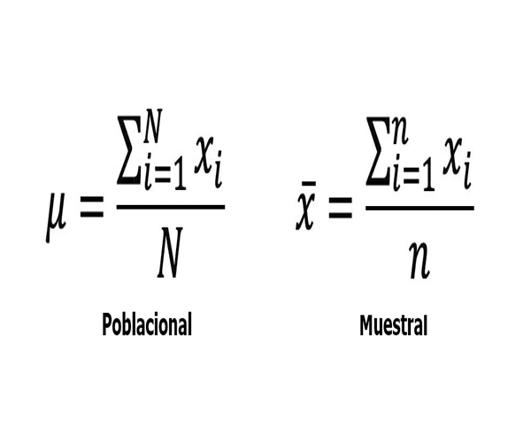
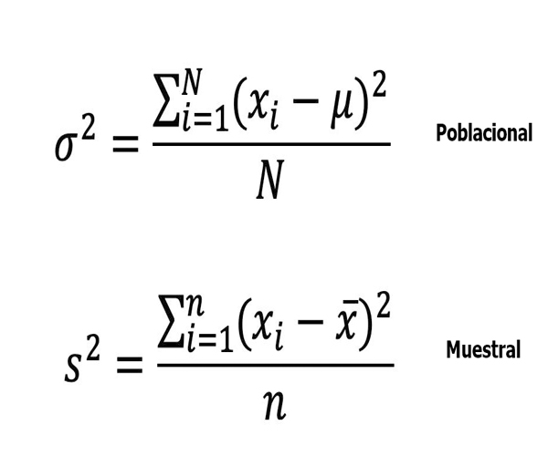
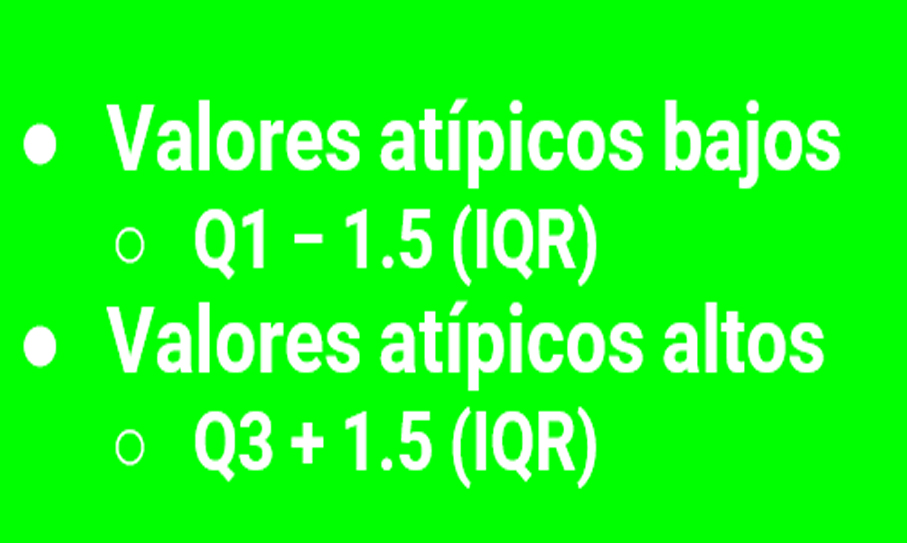

Capitulo 2 "Conceptos clave"
Tipos de Variables
Categóricas
- Ordinal
- Nominal
Numéricas
- Discretas
- Continuas
Niveles de medida
- Nominal
- Ordinal
- De intervalo
- De proporcion

Estadística: ¿Qué es y por qué aprenderla?
La estadística es la ciencia de la interpretación de los datos.
Recopila, organiza, presenta y describe un conjunto de datos con el propósito de facilitar la interpretación, generalmente, con el apoyo de tablas, medidas o gráficas.
Recopila información de una población a partir de una muestra y por medio de la inducción determina las propiedades de la misma.

Definición: Una tabla unidimensional es un arreglo o lista organizada de datos en una sola dimensión. Generalmente, consta de una fila o una columna de datos. Cada elemento ocupa una posición única en la tabla, identificada por un índice.
Definición: Una tabla bidimensional es una estructura de datos que organiza la información en dos dimensiones, generalmente en filas y columnas. Cada celda de la tabla se identifica por dos índices, uno para la fila y otro para la columna, lo que permite una ubicación precisa de cada elemento.
Definición: La frecuencia estadística se refiere al número de veces que se repite un determinado valor o rango de valores en un conjunto de datos. Es una medida descriptiva que proporciona información sobre la distribución de los datos y destaca la ocurrencia de valores específicos.
Definición: La frecuencia relativa es el cociente entre la frecuencia de un valor específico y el tamaño total del conjunto de datos. Se expresa como un porcentaje o proporción, y proporciona información sobre la proporción de veces que ocurre un valor en relación con el total de observaciones. Se calcula dividiendo la frecuencia de un valor entre la frecuencia total.
Definición: El diagrama de tallo y hojas es una herramienta visual que muestra la distribución y la forma de un conjunto de datos. Se organiza de manera que los dígitos de las decenas (tallo) y unidades (hojas) forman las cifras del conjunto de datos. Este tipo de diagrama proporciona una representación rápida y clara de la distribución de los datos. Casos Recomendados para su Uso: Pequeños Conjuntos de Datos: El diagrama de tallo y hojas es particularmente útil cuando se trabaja con conjuntos de datos relativamente pequeños, ya que proporciona una visión detallada de cada valor. Comparación de Distribuciones: Es eficaz para comparar visualmente las distribuciones de dos o más conjuntos de datos. Facilita la identificación de patrones, tendencias y similitudes entre los conjuntos. Análisis de Tendencias Centrales: Permite analizar rápidamente la tendencia central y la dispersión de los datos. Se pueden identificar medianas, modas y rangos de manera intuitiva. Enseñanza y Presentación Visual: Es una herramienta efectiva para enseñar conceptos estadísticos y presentar datos de manera visual en informes o presentaciones.
Definición: Un gráfico de puntos es una representación visual que muestra la ubicación de los puntos de datos en un espacio bidimensional. Cada punto representa una observación y se coloca en las coordenadas correspondientes a sus valores en dos variables. Casos Recomendados para su Uso: Visualización de Relaciones: Es eficaz para visualizar la relación entre dos variables. Puedes identificar patrones, tendencias y posibles correlaciones al observar cómo se distribuyen los puntos en el gráfico. Comparación de Grupos: Facilita la comparación de grupos o categorías al representar sus observaciones como puntos en el mismo gráfico. Esto permite identificar diferencias o similitudes entre grupos. Identificación de Outliers: Ayuda a identificar valores atípicos u outliers en un conjunto de datos. Los puntos que se desvían significativamente del patrón general son fácilmente detectables. Análisis de Tendencias Temporales: Puede utilizarse para analizar tendencias temporales al representar puntos a lo largo de un eje temporal. Esto facilita la identificación de patrones a lo largo del tiempo. Presentación Visual Clara: Es una herramienta visualmente clara y efectiva para presentar datos a audiencias no especializadas. La disposición de puntos es intuitiva y fácil de interpretar.
Definición: Un gráfico de barras es una representación visual que utiliza barras rectangulares para mostrar la magnitud de valores o frecuencias de distintas categorías o grupos. La longitud de cada barra es proporcional a la cantidad que representa. Casos Recomendados para su Uso: Comparación de Categorías: Es ideal para comparar la magnitud de diferentes categorías o grupos. Las barras proporcionan una representación visual clara de las diferencias entre las cantidades representadas. Datos Discretos o Categóricos: Funciona bien para datos que son discretos o categóricos. Cada barra puede representar una categoría específica, y la separación entre barras indica que las categorías son distintas. Facilita la Interpretación: Facilita la interpretación de datos para audiencias no especializadas. La longitud de las barras es fácil de comparar visualmente, lo que hace que este tipo de gráfico sea accesible. Tendencias Temporales: Puede usarse para mostrar tendencias temporales si el eje horizontal representa un período de tiempo. En este caso, cada barra representaría la magnitud de una variable en un momento específico. Distribución de Frecuencias: Es efectivo para representar la distribución de frecuencias en datos categóricos. Cada barra representa la frecuencia de una categoría particular. Comparación de Cantidades Exactas: Permite comparar cantidades exactas entre categorías al observar la longitud de las barras. Es útil cuando la precisión en la comparación es importante.
Definición: Un gráfico circular representa datos en forma de un círculo dividido en sectores. Cada sector representa una categoría o porcentaje, y la suma total de todos los sectores constituye el todo. Casos Recomendados para su Uso: Proporciones de un Todo: Es eficaz cuando se desea mostrar la proporción de cada categoría con respecto al total. Cada sector representa un porcentaje del conjunto. Datos Partitivos: Funciona bien para datos que se pueden dividir en partes o categorías discretas. Cada sector del gráfico representa una categoría específica. Hasta 6-8 Categorías: Se recomienda para conjuntos de datos con un número limitado de categorías (preferiblemente no más de 6-8). Un exceso de sectores puede hacer que el gráfico sea difícil de interpretar. Visualización de Porcentajes: Es útil cuando se desea resaltar porcentajes relativos y comparar visualmente las partes individuales con el todo. Enfatizar Proporciones Relativas: Destaca las proporciones relativas entre las categorías, lo que facilita la identificación de las partes más grandes o pequeñas en comparación con el conjunto. Situaciones Simples: Es adecuado para representar datos en situaciones simples donde la estructura de partes y su relación con el total son fáciles de entender.
Definición: Un gráfico de línea muestra la relación entre dos variables a través de líneas conectadas. En el eje horizontal (eje x) se representan las categorías o el tiempo, mientras que en el eje vertical (eje y) se colocan los valores numéricos. Casos Recomendados para su Uso: Tendencias Temporales: Ideal para mostrar cómo cambian los datos a lo largo del tiempo. Puede revelar patrones estacionales, ciclos o tendencias a largo plazo. Comparación de Múltiples Series Temporales: Permite comparar varias series temporales en un solo gráfico, facilitando la identificación de patrones y relaciones. Visualización de Datos Continuos: Es efectivo para representar datos continuos, como precios de acciones, temperaturas, tasas de crecimiento, etc. Identificación de Picos y Valles: Ayuda a identificar picos y valles en los datos, lo que puede ser esencial para la toma de decisiones. Relaciones de Correlación: Puede utilizarse para mostrar la correlación entre dos variables y cómo cambian juntas. Análisis de Tendencias: Facilita el análisis de tendencias a lo largo del tiempo y la proyección de posibles desarrollos futuros. Datos de Series Temporales: Adecuado para datos organizados en series temporales, como datos financieros, métricas de rendimiento a lo largo del tiempo, etc. Comparaciones Simples: Es útil para comparar valores en diferentes momentos y visualizar la relación entre ellos.
Definición: Un gráfico de oljiva representa las frecuencias acumuladas de las categorías o valores en un conjunto de datos. Se conectan los puntos de las frecuencias acumuladas mediante líneas, formando un polígono que resalta la distribución acumulativa de los datos. Casos Recomendados para su Uso: Visualización de Distribución Acumulativa: Útil para mostrar cómo se acumulan las frecuencias a medida que se avanza a través de las categorías o valores. Identificación de Percentiles: Facilita la identificación de percentiles y cuartiles en un conjunto de datos, ya que la curva representa la acumulación progresiva. Comparación de Distribuciones: Permite comparar la distribución acumulativa de dos o más conjuntos de datos, revelando diferencias en la acumulación de frecuencias. Análisis de Tendencias: Puede ayudar a identificar tendencias y patrones en la acumulación de datos. Representación de Datos Agrupados: Adecuado para datos agrupados en intervalos, ya que muestra cómo se acumulan las frecuencias en cada intervalo. Estudio de Variabilidad: Permite observar la variabilidad en la distribución acumulativa de los datos. Comparaciones por Percentiles: Es efectivo para comparar la posición relativa de los datos en términos de percentiles acumulativos.

Definición: Un diagrama de Venn es una representación gráfica que ilustra las relaciones entre conjuntos. Utiliza círculos superpuestos para mostrar las áreas de solapamiento y las áreas exclusivas de diferentes conjuntos. Casos Recomendados para su Uso: Intersección y Exclusión de Conjuntos: Ideal para visualizar la intersección y la exclusión de conjuntos. Cada círculo representa un conjunto, y las áreas superpuestas representan elementos comunes. Comparación de Conjuntos: Permite comparar conjuntos y entender cómo se relacionan entre sí. Muestra las similitudes y las diferencias de manera clara. Análisis de Datos Superpuestos: Útil cuando se desea visualizar la presencia o ausencia de elementos en diferentes conjuntos. Categorización de Elementos: Puede utilizarse para categorizar elementos en diferentes grupos y mostrar las áreas de superposición. Identificación de Similitudes y Diferencias: Facilita la identificación rápida de elementos comunes y únicos entre varios conjuntos. Problemas de Conjuntos: Excelente para resolver problemas relacionados con la teoría de conjuntos y la probabilidad. Representación de Datos en Encuestas: En encuestas, puede utilizarse para representar la distribución de respuestas en diferentes categorías. Visualización de Solapamientos Complejos: Permite representar solapamientos complejos entre más de dos conjuntos.
Definición: Un histograma es un gráfico de barras que representa la distribución de un conjunto de datos. En el eje horizontal se ubican las categorías o rangos de valores, y en el eje vertical se muestra la frecuencia o la densidad de ocurrencia de esos valores. Casos Recomendados para su Uso: Análisis de Distribuciones de Datos: Ideal para visualizar la forma y la dispersión de una distribución de datos. Puede indicar si los datos siguen una distribución normal, uniforme, sesgada, etc. Representación de Frecuencias: Muestra la frecuencia de ocurrencia de diferentes valores o rangos. Ayuda a identificar patrones y concentraciones de datos. Identificación de Tendencias Centrales: Permite identificar la moda (el valor más frecuente) y otros parámetros como la media y la mediana. Análisis de Variabilidad: Facilita la observación de la variabilidad de los datos y la identificación de posibles outliers o valores atípicos. Comparación entre Grupos: Útil para comparar la distribución de datos entre diferentes grupos o categorías. Evaluación de Rangos de Valores: Ayuda a entender la frecuencia de datos dentro de ciertos rangos y a identificar posibles patrones. Visualización de Datos Continuos: Adecuado para datos continuos, especialmente cuando se desea entender la densidad de ocurrencia en intervalos específicos. Análisis de Datos Cuantitativos: Se utiliza comúnmente en estadísticas para representar datos cuantitativos y facilitar su interpretación. Monitoreo de Procesos: En entornos industriales, puede utilizarse para monitorear la variabilidad de un proceso a lo largo del tiempo.
La media, también conocida como promedio, es una medida estadística que representa el valor típico o central de un conjunto de datos. Se calcula sumando todos los valores en un conjunto y dividiendo el resultado entre el número total de elementos en ese conjunto
La mediana es el valor que se encuentra en el centro de un conjunto de datos cuando están ordenados de manera ascendente o descendente. En un conjunto de datos ordenado, la mediana es el valor que divide la distribución en dos partes iguales, con la mitad de los datos por debajo y la otra mitad por encima. La mediana es una medida de tendencia central que no se ve afectada por los valores extremos en el conjunto de datos.
La moda es el valor que ocurre con mayor frecuencia en un conjunto de datos. En otras palabras, es el valor que tiene la mayor frecuencia absoluta. Un conjunto de datos puede tener una moda (unimodal) si hay un valor que aparece con mayor frecuencia, o puede tener múltiples modas (multimodal) si hay varios valores con la misma frecuencia máxima. También es posible que no haya una moda si todos los valores en el conjunto de datos son distintos. La moda es una medida de tendencia central utilizada especialmente en estadísticas descriptivas.
Bimodal: Un conjunto de datos se considera bimodal cuando presenta dos modas, es decir, dos valores que ocurren con la misma mayor frecuencia en el conjunto. Sin moda: Un conjunto de datos se considera sin moda cuando no hay un valor que se repita más frecuentemente que los demás. En otras palabras, todos los valores en el conjunto son únicos y tienen la misma frecuencia, por lo que no hay un valor modal.
En estadística, el rango es la diferencia entre el valor más alto y el valor más bajo en un conjunto de datos. Es una medida de dispersión que proporciona una indicación de la amplitud total de los datos. Calcular el rango implica restar el valor más bajo del valor más alto. Cuanto mayor sea el rango, mayor será la dispersión de los datos; mientras que un rango más pequeño indica que los datos están más concentrados.
El rango intercuartílico es una medida de dispersión que se calcula como la diferencia entre el tercer cuartil (Q3) y el primer cuartil (Q1) de un conjunto de datos. Los cuartiles dividen un conjunto de datos ordenados en cuatro partes iguales. El primer cuartil (Q1) representa el 25% inferior de los datos, el tercer cuartil (Q3) representa el 75% inferior, y el segundo cuartil (Q2) es la mediana que separa el conjunto de datos en dos mitades iguales. Calcular el rango intercuartílico es útil en estadísticas descriptivas porque proporciona una medida de dispersión que es menos sensible a valores atípicos que el rango completo. Se puede utilizar para identificar la variabilidad en la parte central de un conjunto de datos, excluyendo la influencia de valores extremos. La fórmula del rango intercuartílico es: RIQ=Q3−Q1
La media, también conocida como promedio, es una medida estadística que representa el valor típico o central de un conjunto de datos. Se calcula sumando todos los valores en un conjunto y dividiendo el resultado entre el número total de elementos en ese conjunto
La varianza es una medida de dispersión que cuantifica la extensión de la distribución de un conjunto de datos. Se calcula como la media de las diferencias al cuadrado entre cada valor de datos y la media aritmética del conjunto. La varianza proporciona información sobre cuán dispersos están los valores con respecto a la media.
La "varianza no sesgada" se refiere a una estimación ajustada de la varianza para una muestra. La fórmula de la varianza no sesgada ajusta la división por n en la fórmula de varianza (utilizada para poblaciones) a n−1 cuando se trabaja con muestras..
La desviación estándar es una medida estadística que cuantifica la cantidad de dispersión o variabilidad en un conjunto de datos. En otras palabras, indica cuánto se alejan, en promedio, los valores individuales de la media del conjunto de datos. La desviación estándar se denota comúnmente por el símbolo σ (sigma) para poblaciones y s para muestras.

Definición: Un histograma es un gráfico de barras que representa la distribución de un conjunto de datos. En el eje horizontal se ubican las categorías o rangos de valores, y en el eje vertical se muestra la frecuencia o la densidad de ocurrencia de esos valores.

Un polígono de frecuencia es una representación gráfica de una distribución de frecuencia. Se utiliza comúnmente en estadística para visualizar la distribución de datos y la frecuencia con la que ocurren diferentes valores en un conjunto de datos. Se utiliza en estadística principalmente con los siguientes propósitos: Visualización de la Distribución de Datos: Proporciona una representación visual de la distribución de datos en un conjunto específico. Identificación de Tendencias Centrales: Permite identificar patrones de tendencia central, como la moda y la mediana, al observar cómo se agrupan las frecuencias alrededor de ciertos valores. Comparación de Conjuntos de Datos: Facilita la comparación visual de conjuntos de datos diferentes al superponer varios polígonos de frecuencia en un mismo gráfico. Complemento al Histograma: A menudo se utiliza en conjunto con un histograma. Mientras que el histograma proporciona una representación de barras de la distribución, el polígono de frecuencia suaviza esta representación al conectar los puntos medios de las barras. Análisis de Forma de Distribución: Ayuda a analizar la forma general de la distribución de datos, identificando si es simétrica, sesgada a la derecha, sesgada a la izquierda, etc. Visualización de Cambios en el Tiempo: Puede utilizarse para representar cambios en la distribución de datos a lo largo del tiempo, si se tienen datos secuenciales. Resumen Gráfico: Proporciona un resumen gráfico de la distribución de frecuencias, siendo una herramienta rápida y efectiva para obtener una impresión visual de los datos
La curva de densidad, también conocida como función de densidad de probabilidad, describe la probabilidad relativa de que una variable aleatoria caiga en un rango específico de valores. Es suave y continua, ya que representa una variable continua y no discreta. Usos: Visualización de Distribuciones Continuas: La curva de densidad es especialmente útil para visualizar y comprender la forma de la distribución de variables continuas. Comparación de Distribuciones: Facilita la comparación visual de las distribuciones de diferentes conjuntos de datos continuos. Cálculo de Probabilidades: A partir de la curva de densidad, se pueden calcular probabilidades asociadas con rangos específicos de valores, integrando bajo la curva. Identificación de Picos y Valles: Permite identificar características clave de la distribución, como la ubicación de picos (moda) y valles. Análisis de Simetría y Sesgo: Ayuda a analizar la simetría de la distribución y la presencia de sesgo hacia la derecha o la izquierda. Modelado Estadístico: En estadística, se utiliza para modelar y ajustar datos a distribuciones teóricas como la normal, la exponencial, entre otras. Inferencia Estadística: Se utiliza en inferencia estadística para entender la forma de la distribución subyacente y realizar pruebas de hipótesis. Estudio de Variables Aleatorias Continuas: Es esencial cuando se trabaja con variables aleatorias continuas en campos como la física, la ingeniería, la economía y la biología.
Una distribución simétrica es un tipo de distribución de probabilidad en la que los valores de la variable aleatoria tienen una distribución equilibrada a ambos lados de un punto central, llamado la media. En otras palabras, la forma de la distribución es la misma a la izquierda y a la derecha de la media, y la línea que divide la distribución en dos partes iguales es una línea de simetría.
Llamada “de campana” o “de Gauss” / “Gaussiana Sus medidas de tendencia central son idénticas. Su «50% central» está dentro de ⅔ de desviación estándar hacia la izquierda y derecha de la media
Las distribuciones asimétricas, también conocidas como distribuciones sesgadas, son aquellas en las que los valores de una variable aleatoria tienden a agruparse más en un lado de la media que en el otro. En otras palabras, la forma de la distribución no es simétrica y muestra un sesgo hacia la izquierda o hacia la derecha.
Los valores atípicos, también conocidos como outliers en inglés, son observaciones que se desvían significativamente del resto de los datos en un conjunto. Estos valores son inusuales en comparación con la mayoría de las observaciones y pueden tener un impacto significativo en los resultados de un análisis estadístic
La probabilidad es la ciencia que mide la certidumbre de que ocurra o no un evento.
Fórmula: Si A y B son eventos mutuamente excluyentes, entonces la probabilidad de que ocurra A o B (o ambos) es P(A ∪ B) = P(A) + P(B).
Fórmula: Para dos eventos A y B, la probabilidad de que ocurra A o B (o ambos) es P(A ∪ B) = P(A) + P(B) - P(A ∩ B), donde P(A ∩ B) es la probabilidad de la intersección de A y B.
Fórmula: La probabilidad de la intersección de A y B se denota como P(A ∩ B), y es la probabilidad de que ocurran tanto A como B.
La regla de la multiplicación establece que la probabilidad de la intersección de dos eventos (A y B) es igual al producto de la probabilidad de uno de los eventos (digamos, A) por la probabilidad condicional del otro evento (B dado que A ha ocurrido). • Fórmula: Para dos eventos A y B, la probabilidad de la intersección de A y B (P(A ∩ B)) se puede calcular como: P(A∩B)=P(A)×P(B∣A), donde P(B∣A es la probabilidad condicional de B dado que A ha ocurrido.
Se refiere a la probabilidad de que ocurra un evento A dado que otro evento B ha ocurrido.
El Teorema de Bayes es un principio fundamental en la teoría de la probabilidad y estadística, que proporciona una forma de actualizar las probabilidades de hipótesis en función de nueva evidencia.
una permutación es un arreglo ordenado de objetos. Es el número de maneras en que se pueden organizar estos objetos.
una combinación es una selección no ordenada de objetos de un conjunto. La combinación se refiere al número de formas en que se pueden seleccionar r elementos de un conjunto de n elementos sin tener en cuenta el orden